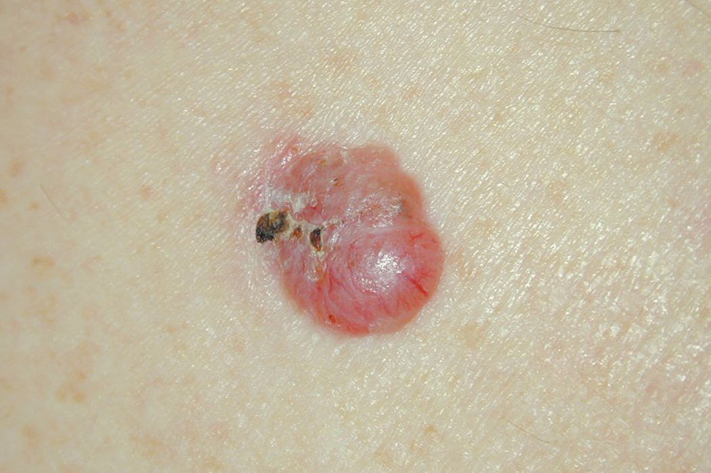
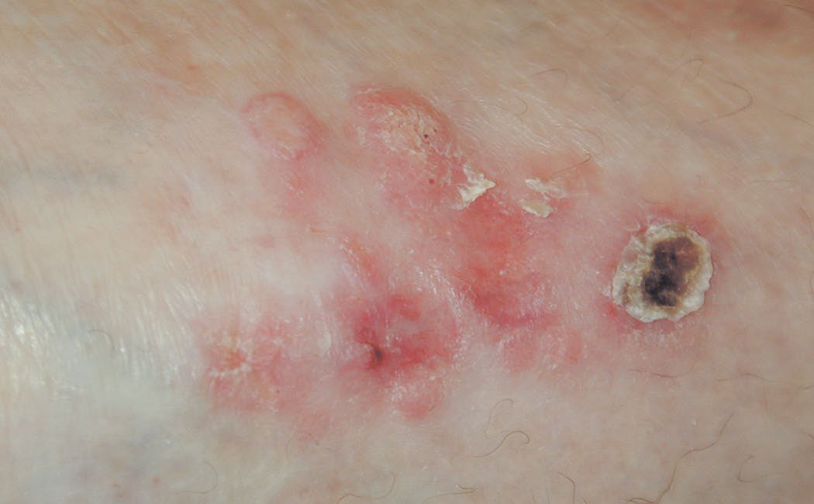
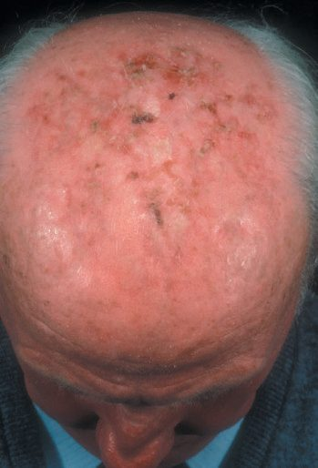
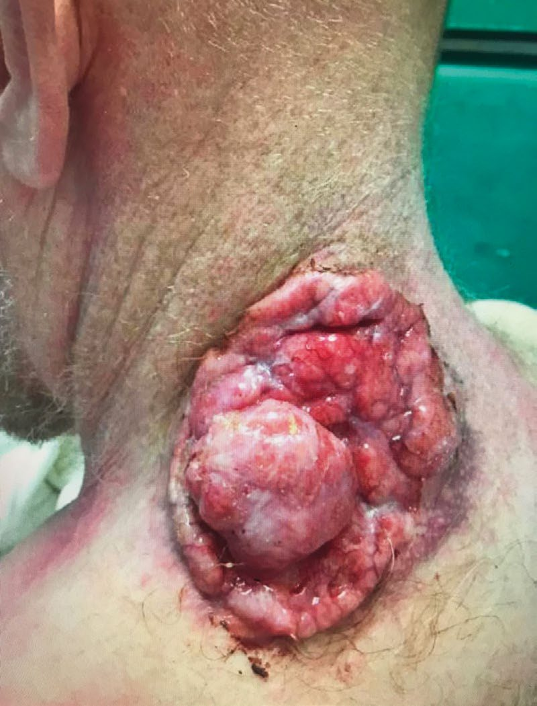

Skin Cancer (BCC/SCC)
Summary
- Basal cell carcinoma (BCC) and cutaneous squamous cell carcinoma (SCC) are the two non-melanoma skin cancers (NMSC) and together represent the most common malignancy in white-skinned people, constituting roughly 33% of all recorded malignancies annually, with 2–3 million new non-melanoma skin cancers diagnosed each year worldwide [1].
- BCC is a slow-growing, locally invasive tumour of basal epidermal/hair-follicle cells that metastasises extremely rarely, whereas SCC is a malignant tumour of keratinising epidermal cells with a real, if variable, metastatic potential [1].
- Approximately 80% of non-melanoma skin cancers are BCC and nearly 20% are SCC [2].
Definition
- BCC is usually a slow-growing, locally invasive, malignant tumour of pluripotential epithelial cells arising from the basal epidermis and hair follicles, hence affecting pilosebaceous skin [1].
- It is also known as a "rodent ulcer" [3].
- Cutaneous SCC is a malignant tumour of keratinising cells of the epidermis or its appendages, arising from the stratum basalis and expressing cytokeratins 1 and 10 [1].
Pathophysiology
- BCCs have no apparent precursor lesion, and tumour development is proportional to the initial dose of carcinogen rather than duration of exposure; the most likely model of pathogenesis involves mesodermal factors as intrinsic promoters coupled with an initiation step [1].
- The hedgehog (Hh) signalling pathway is mutated in up to 90% of BCCs: in the presence of Hh ligand, the Patched (PTCH) receptor releases Smoothened (SMO), activating a signalling cascade; activating SMO mutations and inactivating PTCH mutations both lead to unrestricted growth signalling [2].
- Histologically, BCC shows ovoid cells in nests with a single "palisading" outer layer that alone actively divides, explaining why tumour growth is slower than the underlying cell-cycle rate would suggest, and why incompletely excised lesions can behave more aggressively; morphoeic BCC synthesises type 4 collagenase, allowing rapid spread [1].
- For SCC, UVB radiation silences the p53 tumour-suppressor gene in more than 90% of tumours, so keratinocytes cannot arrest the cell cycle or undergo apoptosis after UV damage, allowing progression from dysplasia to in-situ and then invasive disease [2].
- Actinic keratoses (AKs) are areas of permanent sun damage with dyskeratosis, partial-thickness cellular atypia and subepidermal inflammation but an intact basement membrane; up to 20% progress to SCC, and about 60–65% of SCCs are believed to arise from AKs [1][4].
- Bowen's disease is SCC in situ, often arising in hypertrophic AKs [1].
Clinical features
- The typical BCC is a skin nodule or ulcer with a pearly, rolled edge and telangiectasia, though a persistent, itchy, scaly patch in a sun-exposed area may also represent a BCC [3].
- Ninety percent of BCCs occur on the head and neck [2][5].
- BCC subtypes include nodular/nodulocystic (90% of cases), cystic, pigmented, naevoid, superficial (multifocal/superficial spreading) and infiltrative (morphoeic, ice-pick, cicatrising) variants; nodular BCC classically shows raised, pearly pink papules with telangiectasia and sometimes a depressed centre with rolled borders, giving the classic "rodent ulcer" appearance [1][4].
- Classic descriptions note a nodule that ulcerates centrally with a rolled, non-everted edge, a long history (many months to years), and a permanent scab; a "geographical" or "forest fire" appearance can occur with an advancing edge and healing centre [6].
- Local lymph glands are not usually enlarged, and a small tumour is freely mobile over deep structures, with fixation indicating deep invasion [6].

- SCC typically presents as an ulcer with a raised, rolled/everted edge but can also present as a scaly patch or keratotic horn [3].
- Bleeding is more common with SCC than BCC, and the tumour may become painful if it invades deep structures [6].
- SCC begins as a small nodule that becomes necrotic and ulcerates, forming a circular ulcer with a prominent everted edge, a dark red-brown, vascular colour, and a base of necrotic tumour, serum and blood; the discharge can be copious, bloody, purulent and foul-smelling [6].
- SCC most often occurs on sun-exposed skin of the head and neck, hands, forearms and upper trunk [6].
- Local lymph glands may be enlarged; in about one-third of patients this is due to infection, but palpable nodes should be assumed to contain metastases [6].
- A Marjolin's ulcer is an SCC arising in a long-standing ulcer or benign burn scar, most commonly a chronic venous ulcer, and may be less florid with a non-raised edge [1][6].

Etiology
- The strongest predisposing factor for BCC is ultraviolet radiation (UVR); 95% occur between ages 40 and 80, incidence rises with proximity to the equator, and other risk factors include arsenical compounds, coal tar, aromatic hydrocarbons, ionising radiation and genetic skin cancer syndromes; BCC is more common in men and almost exclusively affects white-skinned people [1].
- SCC is strongly related to cumulative sun exposure, and is also associated with chronic inflammation (chronic sinus tracts, pre-existing scars, osteomyelitis, burns, vaccination points), immunosuppression, chemical carcinogens (arsenicals, tar) and infection with HPV subtypes 5 and 16; tobacco use doubles the relative risk of SCC [1].
- Immunosuppression after solid organ transplantation increases BCC risk roughly tenfold and SCC risk 65-fold compared with the general population, and post-transplant SCC is more aggressive with higher metastatic risk [2].
- Genetic syndromes include naevoid basal cell carcinoma (Gorlin's) syndrome, autosomal dominant, due to a mutation of the "patched" tumour-suppressor gene on chromosome 9q22–31, with 90% of patients developing multiple BCCs plus phenotypic features (overdeveloped supraorbital ridges, broad nasal roots, hypertelorism, bifid ribs, scoliosis, palmar pits, odontogenic cysts), and xeroderma pigmentosum, an autosomal recessive defect of nucleotide excision repair conferring a >2000-fold increase in skin cancer risk, with 60% mortality by age 20 from metastatic disease [1].
- Additional risk factors recognised across sources include fair skin/blue eyes (Fitzpatrick types I–II), family history, previous skin cancer, and premalignant lesions such as sebaceous naevus of Jadassohn for BCC, and Ferguson-Smith syndrome, Bowen's disease, actinic keratosis and chronic ulcers for SCC [3].
- Arsenical keratosis is specifically associated with SCC [5].

Diagnosis
- Diagnosis of BCC and SCC is primarily clinical, supported by biopsy/histology.
- Differential diagnoses of SCC include actinic keratosis, BCC, pyoderma gangrenosum, warts and lichen simplex chronicus [1].
- A rodent ulcer (BCC) can resemble SCC; a long history and rolled edge point to basal cell origin, while keratoacanthoma, sweat gland tumours and malignant melanoma are further differentials [6].
- Histologically, SCC shows tongues of tumour cells with "epithelial pearls" (concentric keratin whorls) and stains positive for cytokeratins 1 and 10; SCC is graded histologically using Broders' grading, which describes the proportion of de-differentiated cells [1][6].
- Any histopathology report for SCC should record depth of invasion, presence of perineural or lymphovascular invasion, and deep/peripheral margin clearance [1].
- Palpable lymph nodes in the draining basin should be investigated by fine-needle aspiration [3].
- Sentinel lymph node biopsy may have a role in high-risk SCC because clinically occult nodal metastases are identified in 7–20% of patients, although indications are less well defined than for melanoma; SLN biopsy is not necessary for BCC because nodal metastases are exceedingly rare [2].
- The cell of origin explains both the behaviour and the histology.
- The epidermis is primarily cellular: keratinocytes are the main cell type, originate from the basal layer and provide the mechanical barrier; melanocytes are of neuroectodermal (neural crest) origin, sit in the basal layer, and transfer melanin to neighbouring keratinocytes through dendritic processes via melanosomes. The density of melanocytes is the same across races; the difference is in melanin production [5].
- The dermis is primarily structural protein, that is collagen, supporting the epidermis, and Langerhans cells are bone-marrow-derived dendritic antigen-presenting cells (MHC class II) with a role in type IV contact hypersensitivity [5].
Basal cell carcinoma originates from basal epithelial cells and hair follicles, is the most common malignancy in the United States and is four times more common than squamous cell skin cancer, with 80% arising on the head and neck [5]. Its histological signature is peripheral palisading of nuclei with stromal retraction, and metastases or nodal disease are rare, with regional lymphadenectomy reserved for the uncommon clinically positive node [5]. The subtype to know is the morpheaform type, the most aggressive, which produces collagenase [5].
- The margins differ between the two tumours, and one situation demands more than either.
- BCC is excised with 0.3 to 0.5 cm margins, or by Mohs surgery; SCC usually requires 0.5 to 1.0 cm margins, rising to 2 cm for Marjolin's ulcers and for penile or vulvar sites [5].
- Mohs surgery uses margin mapping by conservative slices and is used for high-risk lesions where the area of resection must be minimised, for example on the face; it is not used for melanoma [5].
- For SCC the risk factors divide into risks for developing it and risks for it metastasising, and the second list is the shorter and more useful one.
- Risks for development are actinic keratoses, xeroderma pigmentosum, Bowen's disease, atrophic epidermis, arsenic, hydrocarbons such as coal tar, chlorophenols, HPV, immunosuppression, sun exposure, fair skin, previous radiotherapy and previous skin cancer; risks for metastasis are poor differentiation, greater depth, recurrent lesions and immunosuppression [5].
- SCC metastasises more often than basal cell carcinoma but less often than melanoma, and can develop in previously irradiated areas and in old burn scars [5].
Scoring and Severity
- SCC is staged using a TNM classification: T1 is a primary tumour <2 cm, T2 >2 cm, T3 invasion of a facial bone, and T4 invasion of muscle/base of skull/other bones; nodal categories range from N0 to N3 based on number, laterality and size of involved nodes, and M1 denotes metastatic disease; overall stage groups I–IV are derived from these T/N/M combinations [1].
- Independent prognostic variables for SCC include depth of invasion (metastasis is highly unlikely for SCC <2 mm, but 15% metastasise if >6 mm), surface size >2 cm, Broders' histological grade, lymphovascular or perineural invasion, site (lip and ear lesions recur more and extremities fare worse than trunk), aetiology (burn scars, osteomyelitis sinuses, chronic ulcers, irradiated skin carry higher metastatic potential) and immunosuppression [1].
- The NCCN defines low-risk versus high-risk features for both SCC and BCC based on anatomic site/size (areas L, M and H), border definition, primary versus recurrent status, immunosuppression, prior radiotherapy/chronic inflammation, growth rate, neurologic symptoms, differentiation, and depth/Clark level (for SCC) or pathologic subtype (for BCC) [2].
- High-risk BCCs are defined as those >2 cm, located near the eye/nose/ear (direct access to the cranium), recurrent, arising in immunosuppressed patients, or with micronodular/infiltrating histology [1].
Treatment and Management
- For BCC, tumour and surgical margins should be assessed and marked under loupe magnification, varying between 2 and 15 mm depending on the macroscopic variant; where margins are ill-defined or tissue is at a premium (nose, eyes), a two-stage excision with delayed reconstruction or Mohs' micrographic surgery is advisable [1].
- Excision with 4-mm margins is standard for a well-defined, low-risk BCC, with wider margins for recurrent or morphoeic tumours [3][4].
- The ABSITE Review similarly quotes 0.3–0.5 cm margins for BCC (or Mohs surgery) [5].
- Mohs' micrographic surgery is performed by dermatological surgeons with additional training to excise skin cancer under microscopic control, and is often used for high-risk lesions in cosmetically sensitive areas [1][4].
- In elderly or infirm patients, radiotherapy achieves recurrence rates similar to surgery but carries a risk of inducing further malignancy after one to two decades; biopsy-proven superficial tumours can be treated with topical 5-fluorouracil or imiquimod [1].
- Incompletely excised BCC has a 67% recurrence rate with grossly involved margins and 33% within 2 years with microscopically involved or "close" margins [1].
- Other BCC treatment modalities include curettage and cautery, cryotherapy, radiotherapy, 5-fluorouracil cream, imiquimod and photodynamic therapy; 95% of lesions are cured by complete excision and 99% by Mohs' surgery, with radiotherapy curing 90% [3].
- For SCC, a 4-mm clearance margin is recommended for lesions <2 cm and a 1-cm margin for lesions >2 cm; 95% of local recurrences and regional metastases occur within 5 years, so follow-up beyond this is not indicated [1].
- Sabiston quotes a typical gross 5-mm margin for most SCCs, with 10-mm margins for higher-risk lesions, and Mohs surgery for cosmetically sensitive or recurrent/high-risk tumours [2].
- The ABSITE Review recommends 0.5–1.0 cm margins for SCC generally, and 2 cm for Marjolin's ulcers and penile/vulvar lesions [5].
- Field therapies (radiotherapy, cryosurgery, photodynamic therapy, electrodessication and curettage, topical imiquimod) can be used for lower-risk or precursor lesions; cryotherapy achieves local control >90% for small superficial lesions [2].
- Regional lymphadenectomy is performed for clinically positive nodes in both BCC and SCC [5].
- Locally advanced or metastatic SCC may be treated with platinum-based chemotherapy or anti-PD-1 immunotherapy (cemiplimab, pembrolizumab), which are FDA-approved for locally advanced SCC with response rates of 30–50% [2].
- Unresectable/metastatic BCC can be treated with hedgehog-pathway inhibitors (vismodegib, sonidegib), which show 30–43% response rates, or with immune checkpoint therapy after Hh-inhibitor failure [2].
The UK referral pathway grades the three common skin cancers differently, and the striking point is that basal cell carcinoma is the one lesion NICE sends down a non-urgent route.
| Lesion | NG12 referral action |
|---|---|
| Melanoma | Refer using a suspected cancer pathway referral if a suspicious pigmented skin lesion has a weighted 7-point checklist score of 3 or more (1.7.1); refer if dermoscopy suggests melanoma (1.7.2); consider a suspected cancer pathway referral for a pigmented or non-pigmented lesion suggesting nodular melanoma (1.7.3) |
| Squamous cell carcinoma | Consider a suspected cancer pathway referral for a skin lesion that raises the suspicion of SCC (1.7.4) |
| Basal cell carcinoma | Consider a non-urgent referral (1.7.5). Only consider a suspected cancer pathway referral if there is particular concern that a delay may have a significant impact, because of factors such as lesion site or size (1.7.6) |
Table reformats the NG12 skin cancer referral recommendations [7]. Note the verbs: melanoma with a checklist score of 3 or more, or a positive dermoscopy, is refer; everything else is consider.
- The weighted 7-point checklist is weighted, which is the part most often forgotten.
- Major features score 2 points each: change in size, irregular shape, irregular colour.
- Minor features score 1 point each: largest diameter 7 mm or more, inflammation, oozing, change in sensation.
- The referral threshold is a total of 3 or more, so any single major feature plus any single minor feature reaches it [7].
NG12 gives the typical appearance of a BCC as an aid to the non-urgent decision: an ulcer with a raised rolled edge; prominent fine blood vessels around a lesion; or a nodule on the skin, particularly pearly or waxy nodules [7]. On who should perform the excision, NG12 does not answer the question itself but hands it over: follow NICE's guidance on improving outcomes for people with skin tumours including melanoma for advice on who should excise suspected basal cell carcinomas [7].
- That service guideline, CSG8, is the structural half of the UK pathway.
- It covers how services should be organised rather than how a lesion should be treated, and recommends that cancer networks establish 2 levels of multidisciplinary team; that people with precancerous lesions should be treated by their GP or referred; that people needing specialist diagnosis should be referred to a doctor trained to diagnose skin cancer; and that skin cancer teams work to agreed protocols, including protocols for high-risk or special groups [8].
- Its status is worth knowing: published in 2006, last updated in 2010, and in December 2020 NICE decided to retain but not update it, because although cancer service structures have changed, stakeholders indicated the guideline is still useful to clinical practice [8].
Surgeries
- Surgical excision is the mainstay of treatment for both BCC and SCC and is the only means of providing accurate histology and margin clearance [1].
- Mohs' micrographic surgery excises skin cancer in stages under direct microscopic control of the margins and is indicated for high-risk lesions, ill-defined margins, or cosmetically/functionally sensitive sites such as the nose, eyelids and ears [1].
- Reconstruction after excision of facial BCC/SCC commonly uses local flaps, for example, bilobed flap, forehead flap, or V-Y nasolabial advancement flap reconstruction of nasal defects, to avoid contracture and functional impairment [1].
- Where margins are unclear and Mohs' surgery is unavailable for high-risk lesions, excision with a wider (10 mm) margin can be considered [4].
Complications
- Complications include local tissue destruction and disfigurement from advanced or neglected lesions, long-standing BCC can erode deeply into the face, destroying skin and bone and exposing the nasal cavity, sinuses or eye ("rodent ulcer" destroying the orbit) [6].
- Infection and bleeding are common complications of ulcerating SCC, and bleeding can occasionally be massive and fatal [6].
- Regional lymph node metastasis occurs in up to 30% of high-risk SCC versus about 2% of low-risk SCC, with an overall local recurrence rate of about 20% [1].
- BCC rarely metastasises, but once metastatic disease develops median survival falls to less than 1 year [2].
- Radiotherapy used to treat BCC/SCC carries a risk of inducing further malignancy one to two decades later [1].

Prognosis
- Most BCC and SCC has an excellent prognosis when treated appropriately: 95% of BCC lesions are cured by complete excision and 99% by Mohs' surgery, and radiotherapy cures about 90% [3].
- SCC prognosis depends on lesion diameter, depth of invasion, and nerve or vessel invasion on histology [3]; 95% of SCC tumours are cured by excision with appropriate margins [3].
- High-risk features (poor differentiation, greater depth, recurrence, immunosuppression, perineural/lymphovascular invasion) worsen prognosis and increase metastatic risk for SCC to as much as 30% [1][5].
- BCC prognosis is generally excellent given its very low metastatic potential, though morphoeic and other infiltrative subtypes carry a higher risk of local recurrence due to indistinct margins [1][4].
References
- Bailey & Love's Short Practice of Surgery, 28th ed., Ch. 45 Skin and subcutaneous tissue
- Sabiston Textbook of Surgery, 22nd ed., Ch. 63 Melanoma and Cutaneous Malignancies
- Oxford Handbook of Clinical Surgery, 5th ed., Ch. 17 Plastic surgery
- Schwartz's Principles of Surgery: ABSITE and Board Review, Ch. 16 The Skin and Subcutaneous Tissue
- The ABSITE Review, 2022, Ch. 18 Plastics, Skin, and Soft Tissues
- Browse's Introduction to the Symptoms and Signs of Surgical Disease, 6th ed., Ch. 4 The skin and subcutaneous tissues
- NICE Guideline NG12: Suspected cancer: recognition and referral (2015, updated 2026), 1.7.1 to 1.7.6; 1.7.1, Weighted 7-point checklist; 1.7.5; 1.7.7 www.nice.org.uk
- NICE Cancer Service Guideline CSG8: Improving outcomes for people with skin tumours including melanoma. National Institute for Health and Care Excellence, London, UK, 2006, updated 2010., Overview; Recommendations www.nice.org.uk